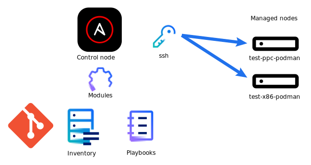

files
ansible.yaml
---
- hosts: power
tasks:
- name: "update hostnames"
hostname:
name: "test-ppc-docker"
- name: installing podman
package:
name: "podman"
state: present
- name: Pull httpd image
containers.podman.podman_image:
name: docker.io/library/httpd
- name: Pull coredns image
containers.podman.podman_image:
name: docker.io/coredns/coredns
- name: Pull nginx image
containers.podman.podman_image:
name: docker.io/bitnami/nginx
- name: Copying file into home
copy:
src: index.html
dest: /usr/local/apache2/htdocs/
- name: run httpd container
containers.podman.podman_container:
name: httpd
image: docker.io/library/httpd
state: started
detach: true
exposed_ports:
- 80
ports:
- 80:80
volumes: /usr/local/apache2/htdocs/:/usr/local/apache2/htdocs/
ansible.cfg
[defaults]
remote_user = temp
host_key_checking = false
deprecation_warning = false
[privilege_escalation]
become = True
become_method = sudo
become_user = root
become_ask_pass = False
run playbook
ansible-playbook ansible.yaml
PLAY [power] ***********************************************************************************************************
TASK [Gathering Facts] *************************************************************************************************
ok: [test-ppc-docker]
TASK [update hostnames] ************************************************************************************************
ok: [test-ppc-docker]
TASK [installing podman] ***********************************************************************************************
ok: [test-ppc-docker]
TASK [Pull httpd image] ************************************************************************************************
ok: [test-ppc-docker]
TASK [Pull coredns image] **********************************************************************************************
ok: [test-ppc-docker]
TASK [Pull nginx image] ************************************************************************************************
ok: [test-ppc-docker]
TASK [Copying html into home] ******************************************************************************************
ok: [test-ppc-docker]
TASK [Copying svg into home] *******************************************************************************************
ok: [test-ppc-docker]
TASK [run httpd container] *********************************************************************************************
ok: [test-ppc-docker]
PLAY RECAP *************************************************************************************************************
test-ppc-docker : ok=9 changed=0 unreachable=0 failed=0 skipped=0 rescued=0 ignored=0